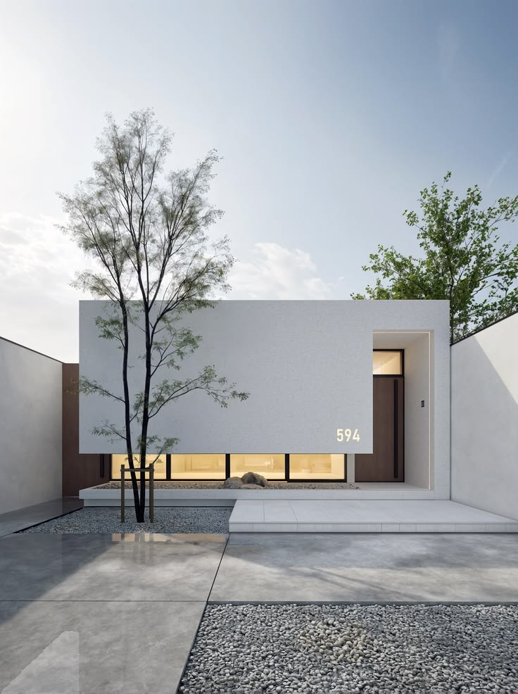
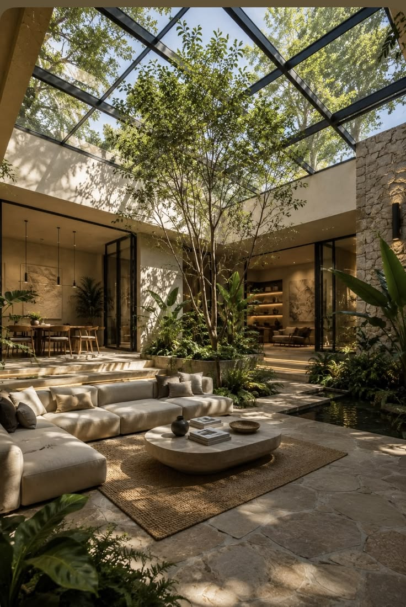

Publicações Recentes

O Impacto do Minimalismo na Arquitetura Residencial
ArquiBlog 01 set. 2026O minimalismo vai muito além de uma simples estética visual; é uma filosofia de projeto que prioriza a funcionalidade, espaços abertos e a redução do supérfluo.
Leia mais
Como Integrar Paisagismo aos Espaços Internos
ArquiBlog 02 set. 2026Trazer a natureza para dentro de casa não melhora apenas a qualidade do ar, mas também reduz o estresse diário e valoriza os ambientes internos.
Leia mais